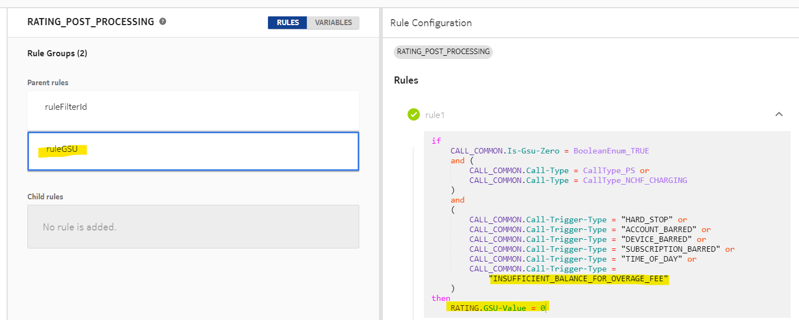

Overage charge is the ability to define an overage fee per Overage Limit (OLI) block. This feature provides the functionality to apply charge on the overage usage, and it is applicable only when the usage limit is set and reached. If the Usage Limit (ULI) of a counter is reached, then the Overage Limit (OLI) is considered and it is applied repeatedly.
The overage fee is charged from the main balance of the account. While reserving units from the OLI block, an overage fee is reserved from the account and it is consumed during usage.
Configuration
- Fee: This parameter defines the overage fee to be charged when usage is consumed from the overage block.
- Generate EDR: If the Generate EDR flag is enabled, then EDR is
generated at the time of charging overage fee from the main balance. If
multiple blocks are consumed in a single call, then a separate EDR is
generated for each OLI block. For details on CDRs/EDRs, see CDR/EDR Reference Guide.
 Note:
Note:
The following rule attributes are available in THRESHOLD_PROFILE source context in THRESHOLD trigger
to send overage charge notifications:- THRESHOLD_PROFILE.Current-Overage-Usage-Cost: This attribute provides
the cost of current on-going overage block.
For example: If ULI = 5GB, OLI = 2GB, Fee = 2$ and current counter value = 9.5 GB, then Current-Overage-Usage-Cost is 2$.
- THRESHOLD_PROFILE.Total-Overage-Usage-Cost : This attribute provides
total cost of overage blocks used in the billing cycle.
For example: If ULI = 5GB, OLI = 2GB, fee = 2$ and current counter value = 9.5GB, then Total-Overage-Usage-Cost = 6$.
- THRESHOLD_PROFILE.Counter-Overage-Max-Resets: This attribute provides the maximum number of overage block counts.
If available balance is insufficient to charge the overage fee, then it is treated as a hard stop without VQT, and the call fails with error code 4012 (Quota Limit Reached).
Separate filter ID values can be defined for insufficient balance for overage fee while returning FUA = restrict-access. They can also be configured based on rating group.
If the main balance is insufficient, and GSU=0 is to be sent to the network with result code success, then the following rule configuration is required:
Versioning
If versioning is enabled (that is, the application preference Versioning Enabled is to true), and the overage limit or fee is updated in the counter instance using any template API, then the updated Overage Limit and OLI fee are considered at the next step up of the overage limit block (OLI block). There is no impact on the current overage block.
Note:Additional information
- The overage charge is deducted only from main balance. Secondary balance is not used even if the main balance is insufficient or not available.
- The updated Overage Limit (OLI) and fee are effective from the next OLI block. The updates do no impact the current consumption.
- To achieve granularity for voice calls, a rate with zero cost and required granularity (1 min) to charge from main balance should be applied. Granularity is applied even if charging is done from the usage block (allowance).
- For updating the Overage Limit (OLI) or OLI fee of the existing subscriptions, entity versioning should be enabled.
- NCC can apply a maximum of two overage charges for a network event, and only one overage charge can be from a multi-service counter. Overage charges on multiple multi-service counters is not supported.
- Data boost bundles (which have multi-service counters) should have a fixed allowance. They should not be used when exhausted. Hence, overage limit or overage charge cannot be configured on data boost counters.
- Spending limit: Overage fees cannot be configured on OLI Blocks for cost counters.
- Overage fee cannot be configured for Next-Rate.
- For a call, maximum of one multi-bundle counter can have OLI fee configured.